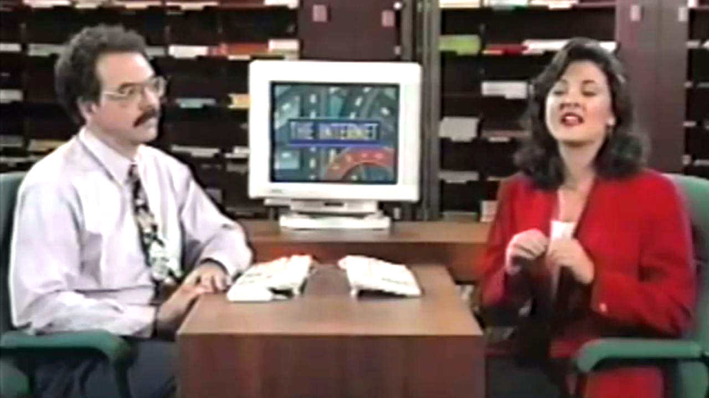
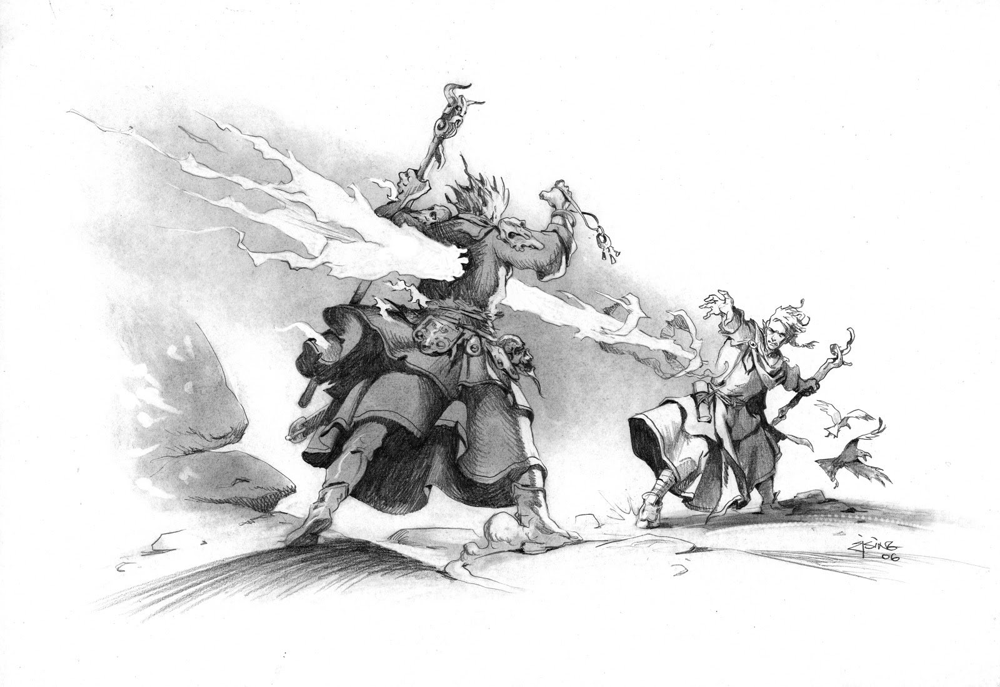
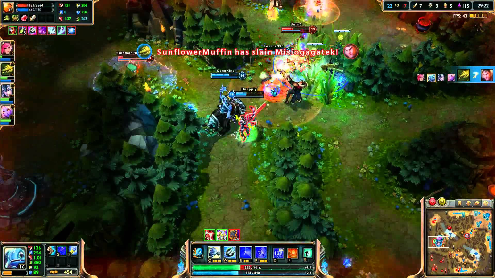
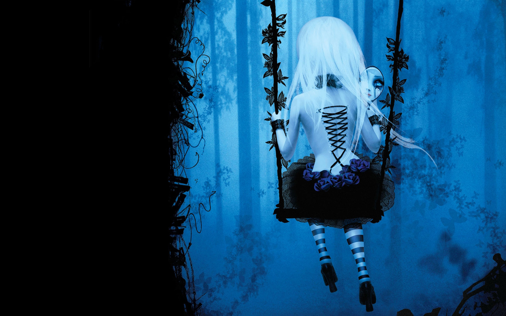
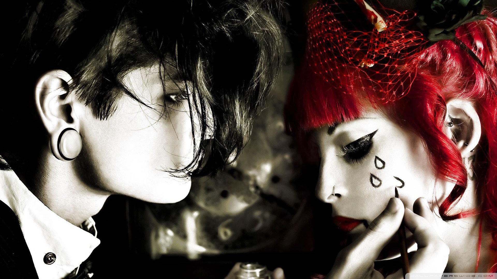

Nie sposób jest nie zauważyć, że nasza teraźniejszość znacząco różni się od przeszłości. Nie mówię nawet o czasach starożytnego Egiptu czy średniowieczu – mówię o czymś bardziej przyziemnym. Mamy rok 2015 – cofnijmy się więc o dwadzieścia lat, ażebym mogła w jasny sposób wyjaśnić na jakim problemie skupisz swoją uwagę w przeciągu najbliższych kilku minut.
Mamy rok 1991. Internet dopiero zaczyna się tworzyć. Posiada już usługę czatowania, pierwszą istniejącą witrynę, a sieć nieustannie się rozrasta. Już rok później na świecie jest ponad 1 000 000 komputerów podłączonych do Internetu. Ich liczba stale rośnie. Z biegiem czasu powstają takie domeny jak Yahoo!, eBay czy Google. Ludzie na ulicach weseli i uśmiechnięci nie mając nawet pojęcia o istnieniu czegoś takiego jak smartfony, czy ekran dotykowy są zajęci koncertem Michaela Jacksona w Warszawie, wybieraniem Kwaśniewskiego na prezydenta oraz troszczeniem się o siebie. Powstaje rozgłośnia radiowa jakże Nam znanego radia RMF FM oraz (odrobinę później) Radia ZET. Ludzkość zaczyna badać Jowisza, system GPS zaczyna działać, a cywile uzbrojeni w komputery sięgają po komórki, pagery oraz inne gadżety pozwalające na komunikowanie się ze światem bez odwijania za sobą kabla telefonicznego.

Pod koniec lat 90. Pojawia się także pierwsze urządzenie mobilne mające wbudowaną w sobie opcje dostępu do Internetu. Mając możliwości oraz brak ograniczeń – społeczność stworzyła sobie nowy wymiar zwany Internetem. Nieznany ląd nie miał żadnych praw, zasad czy wymagań. Było to nieograniczone niczym miejsce, gdzie każdy mógł czytać co chciał, pisać co chciał i samorealizować się w wybranej przez siebie dziedzinie. Ponad to – Jaś Kowalski, Mieczysław Nowak czy Maria Anna Wiśniewska – byli anonimowi.
Anonimowość i brak możliwości określenia realnej tożsamości użytkowników (przynajmniej w tamtych czasach) pozwalało na dowolność bycia sobą i wydaje mi się, że to właśnie było jedną z najważniejszych cech, którymi tak bardzo kusił Internet.
I tak właśnie powstała cyberkultura. Czym się różni od znanej Nam kultury? Jest to kultura, gdzie jednym z głównych filarów (zaraz po ludziach, którzy są niezbędni) jest Internet oraz inne media, które spajają całe społeczeństwa Cyberkultura nie jest ograniczona żadnym terytorium, bowiem istnieje w sieci, która jest dostępna na każdym kontynencie i dla każdego, kto posiada odpowiedni sprzęt by do niej dołączyć. Jeśli się jej wnikliwiej przyjrzymy dostrzeżemy, że zachodzą w niej takie same zjawiska jak i w „tradycyjnej” kulturze.
Moim tematem nie jest jednak cyberkultura, a cybersubkultura. Czym się różni jedno od drugiego? Aby to zrozumieć musimy najpierw zapoznać się z pewnymi prawidłowościami. Pomoże w tym graf, który sama wykonałam pomagając sobie szklanką, miską oraz kieliszkiem. Zielone pole to kultura. Opowiadałam już o niej. Są to obrazy, piosenki, zabytki, filmy, dosłownie wszystko co otacza każdego człowieka. Niebieskim kolorem i za pomocą drutu kolczastego oznaczyłam subkulturę. Dlaczego? Albowiem subkultury są hermetyczne.
Z racji rozwoju technologii udałam się do Wikipedii, bo definicję, która zapewne będzie lepszą niż ta, którą sama stworzę. Zatem:
Subkultura (z łac. m. in.: sub = "pod";= "w obrębie" + kultura) – to pojęcie określające zespół zjawisk kulturowych, częściowo autonomiczny wobec kultury dominującej, jednakże nigdy nie zrywający całkowicie związków z tą kulturą.
A więc subkultura jest hermetyczną grupą, która funkcjonuje w obrębie kultury tzn. popularnej (której podlega większość społeczeństwa). Jest ona z nią nierozerwalnie powiązana, choć ma swoje specyficzne elementy, które odróżniają jej członków od pozostałej tzw. szarej masy. Jej członkowie mogą być ze sobą połączeni przez podobne światopoglądy (dla przykładu: neonaziści; rasizm i kult siły), wierzenia (sekty), gust muzyczny (rap, punk, metal), strój (emo) czy zainteresowania (grupy naukowe, zawodowe, hobbistyczne).
Pracę, którą właśnie czytasz postanowiłam jednak oprzeć na aktywności owych grup istniejących w kulturze w wymiarze cyber. Planuję przyjrzeć się działalności poszczególnych subkultur zarówno w tzn. realu i virtualu (czyli właśnie w Internecie). Gdzie będę szukać? W książkach, na ulicach, imprezach. Na portalach internetowych, na Facebooku, na forach, na YouTube. Czy uda mi się pokazać działalność cybersubkultury? Przekonajmy się.
Czas, jaki mogę Ci zająć tą pracą jest znacząco ograniczony (Myślę, że po dziecięciu minutach i tak się poddasz. Zakład?), a więc przyjrzę się tylko tym wybranym przeze mnie.
Pierwszą subkulturą której się przyjrzę będą… Anorektyczki. Trochę specyficznie, wiem, jednak subkultura to nie tylko ludzie w glanach czy w spodniach spadających z tyłka. Ażeby nie przepisywać ciągle tych samych słów pozwolę sobie zacytować swoje własne słowa, a dokładniej fragment mojego projektu z innego przedmiotu, który oscylował na tematyce anoreksji:
Możesz na nie trafić wybierając twaróg lub szukając otrębów o smaku ananasa w dziale ze zdrową żywnością. Wyróżniają się specyficznie wychudzonymi kończynami, gdzie uda są często chudsze od łydek, a ramiona od przedramion. Ich ciała pokrywa meszek identyczny do tego, który pokrywa skórę niemowlęcia. Ich włosy są cieniem tego, co możemy zobaczyć na głowach ludzi zdrowych - jest to niemalże kilka włosów mizernie kryjących naciągniętą do granic możliwości skórę. Ich tułów wygląda niemalże niczym praca jednego z najlepszych grafików, gdzie kości przykryte skórą nie pozostawiają przestrzeni dla narządów wewnętrznych. Często spotykane są również otarcia wzdłuż linii kręgosłupa powstałe w skutek między innymi szorowania skóry o wykładzinę podczas wykonywania nie kończącej się serii brzuszków. Z drugiej zaś strony widać uszkodzone przez kwasy znajdujące się w naszych żołądkach uzębienie, a raczej jego gnijące resztki. Jeśli nie wiesz jak je rozpoznać - nie znajdziesz ich.
Dodam, że ich sekretnym znakiem rozpoznawczym są czerwone bransoletka, którą każda szanująca się anorektyczka sama sobie plecie. Myślę, że to, co do tej pory nakreśliłam na temat anoreksji – przynajmniej w realnym wymiarze – jest wystarczające. Jak jednak prezentuje się internetowe oblicze anoreksji? Nie musiałam długo szukać, aby odszukać pierwsze jej ślady. Po wpisaniu samego hasła pojawiła mi się masa blogów osób, które cierpią na ową chorobę. Te grupę można rozdzielić na osoby, które chcą być zdrowe i wrócić do normalności oraz tych, które są zafascynowane ideą chudnięcia i wciąż szukają sposobów, ażeby zrzucić jak najwięcej (tzn. motylki, pro Ana). Widziałam masę filmów na YouTube pokazujących historię dziewczyn. Tą najbardziej wzruszającą znajdziecie pod spodem.
Jednakże to są jedynie te wyjątki, które usiłują dotrzeć do społeczeństwa, ażeby przeprowadzić akcję profilaktyczną, ocalić kilka istnień. Jak jest u źródła? Lubię szukać, a więc po niecałych pięciu minutach znalazłam kolejną stronę o podobnej, aczkolwiek innej tematyce. Stronę dla tych, które są „motylkami”. Znalazłam masę informacji. Znalazłam spis porad życiowych dla anorektyczek i nie mogę się powstrzymać od zacytowania chociażby kilku zasad, które wpadły mi w oczy. Między innymi:
Bycie chudą jest ważniejsze od bycia zdrową.
Nie będziesz jadła niczego bez poczucia winy.
Wiem, że waga jest wskaźnikiem moich codziennych sukcesów i porażek.
Wśród komentarzy - zwłaszcza tych sprzed kilku lat, kiedy społeczeństwo nie było świadome problemu – widać wzajemne wspieranie się w dążeniu do „perfekcji” anorektyczek, podsyłanie sobie adresów do stron, które mogą pomóc w traceniu kilogramów. Większość dziewczyn była tak zakręcona na tym temacie, że już dawno straciły poczucie choroby a swoją chudość i jadłowstręt traktują jako styl życia.

Kolejną subkulturą, którą potraktuje dwuwymiarowo będzie... Dość specyficzna. Kiedyś opierała się na ogromnej wyobraźni, miłości do gier planszowych oraz życia w świecie fantasy. Zazwyczaj przedstawiciele tej grupy słabo odnajdują się w relacjach międzyludzkich, zwłaszcza z kobietami. W obecnych czasach, wraz z rozwojem Internetu oraz technologii ich granie zmieniło się w prawdziwe granie (League of Legends, World of Warcraft, Tibia, Metin) oraz zainteresowanie informatyką. W kulturze utrwalił się ich obraz jako nieśmiałego chłopaka w okularach, który przerażony tym, że jest po za swoją strefą komfortu usiłował jak najprędzej do niej wrócić. Każda ich wypowiedź ociera się o ich zainteresowania. Jednym z najbardziej znanych przykładów owej subkultury jest Sheldon z serialu "Big Bang Teory".
Jak wygląda ich wesja cyber? Zaskakująco łatwo, wystarczyło zaczepić się o temat LoL’a. Zaczęłam od Facebooka oraz grup przeznaczonych owej grze. Na starcie zauważyłam wiele słów, które dla mnie – mimo tego, że także gram w wiele gier – nic nie mówiło. "Farmić", "rework" i wiele innych pojęć. Trafiłam też na wiele memów internetowych mogących wskazać na główne problemy typowego nerda. Ruszając dalej na swoje małe przeszpiegi zauważyłam, że ich aktywność nie opiera się jedynie na rozprawach na temat gier oraz ich aktualizacji.

Na YT jest masa filmów z rozgrywek oraz fragmentów gry, które cała armia owych graczy komentuje (czasem lepiej, czasem gorzej, czasem plując jadem). Jako skrupulatny badacz nie mogłam ograniczyć się do jego źródła. Postanowiłam rzucić się na głęboką wodę i odważnie ruszyłam na zupełnie nieznany teren - forum dla graczy. Żeby nie bazować na jednej grze – zajęłam się dla odmiany World of Warcraft. Zrobiłam pamiątkowego screena, jednakże przyznam, iż wchodząc w wątki i trafiając na wypowiedzi typu:
Ech te alternatywne Draenei są wytworem alternatywnej lini czasowej (skopiowały się wraz z linią czasową) i teoretycznie pochodzą z Argusa z naszej lini czasowej bo alternatywny Argus nie istnieje.
A co do śmierci Archimonda traktujcie to tylko jako wtopę blizza, jak ktoś powiedział blizz sam się w tym pogubił.
Tak więc nic nie zrozumiałam. Przeglądając kolejne wątki doszłam do wniosku, że moje raczkujące zainteresowania grami nijak nie pomogą mi w zrozumieniu tematyki przeprowadzanych tam dyskusji. W każdym razie – mam nadzieję, że udało mi się pokazać aktywność owych nerdów w sieci, a przynajmniej udowodniłam, iż jest.

Trzecią i ostatnią subkulturą którą wzięłam na warsztat jest subkultura emo. Nazwa tej subkultury wzięła się od angielskiego słowa „emotiona”. Teoretycznie – przynajmniej wewnętrznie – miała służyć ludziom, którzy są wyjątkowo wrażliwe i „łatwe do zranienia”. Z czasem jednak forma przerosła treść i subkultura została zdominowana przez tak zwane „pokemony”. Psychiczny aspekt owej grupy został zatracony i teraz cała ideologia została oparta na guście muzycznym oraz strojach. Jak rozpoznać emo na ulicy? Może być rodzaju żeńskiego lub męskiego, choć te drugie może być lekko przesadzone. Nie tak dawno okazało się, iż Pete Wentz, który swego czasu był głową koronną owego stylu nie mogąc odszukać odpowiednio obcisłych dla siebie spodni – zaopatrywał się w nie w damskich butkach. Można? Można. Fanek mu nie ubyło a do męskiej mody wkroczyły rurki (panowie, wiemy komu dziękować). W każdym razie aktualny wizerunek emo to grzywka (im dłuższa tym lepiej!), mocny makijaż oczu, blada cera oraz fryzura, przypominająca puchatą aureolę wokół głowy ekstremalnie usztywnionej lakierem do włosów. Ubrania są najczęściej czarne z kolorowymi akcentami (upodobanym kolorem jest oczywiście róż) w postaci kokardek, martwych króliczków czy agrafek losowo wpinanych w różne części odzienia. Ich sztandarowym obuwiem są różnokolorowe trampki oraz glany. Najbardziej ekstremalne osobniki odznaczają się sznytami na przedramionach (ażeby były "ukryte", ale widoczne) oraz nierozsądną ilością kolczyków w twarzy.

Jeśli słyszysz gdziekolwiek jesteś szloch, krzyki czy jawną rozpacz z racji błahych powodów jakimi może być pięciominutowe spóźnienie się porannego autobusu – możesz być niemalże pewnym, że oto właśnie emo. Jak odszukać ich w sieci? Poszło mi równie łatwo jak z poprzednimi subkulturami. Wniosek jest jeden – wszystkie z wyżej wymienionych są otwarte dla nowych członków lub jestem damską wersją Sherlocka Holmesa i to w tym kierunku powinnam rozwijać swoje życie. Pierwszym tropem było wpisanie w Google słowa „żyletka”. Nie wiedząc jak i kiedy znalazłam się na podejrzanej stronie pełnej dołujących cytatów i obrazów pokazujących liczne sposoby na autodestrukcje i samobójstwo. Mieszają makabryczne sceny zakrwawionych dłoni z dorysowanymi serduszkami czy wyznaniami miłości starając się ukazać ból, który tak uwielbiają. Po kolejnych minutach poświęconych tematyce emo zauważyłam oRyGin4lNy 5tYL Pi54aNi4, który prawie mnie pokonał. Ograniczyłam się więc do podkradnięcia zdania z jednego z for internetowych:
4 cZ3Mó n13 cHc35H Być McHr000cZnY ? 70 74|13 |óóL . :*:* xD xP :F
ażeby każdy czytający mógł samo ocenić jego skuteczność – jeśli rozmawiają o ćpaniu czy wypisują listy sklepów, gdzie bez dowodu mogą kupić alkohol – to policja raczej ich nie odszyfruje. Ku mojemu zaskoczeniu nie zauważyłam ANI JEDNEGO posta o stanie wewnętrznym osób tam piszących (najbliższy tego było: "N1kT Mn13 N13 R0zUM1e!.!.!!"), a jedynie sposoby na układanie włosów, wykonywanie makijażu oraz inspiracje dotyczące komponowania ubioru.
Podsumowując – celem owej pracy było pokazanie, że świat ma nowy wymiar. Życie jedynie „realem” jest możliwe, jednak chcąc nie chcąc wiele nam odbiera i izoluje od świata, a przecież człowiek musi żyć „w stadzie”. Że „virtual”, który kiedyś był wyborem dziś jest niemalże koniecznością, ażeby być na bieżąco. Z kuszącej opcji stał się normą, którą musimy przyswoić dla lepszego i efektywniejszego funkcjonowania w tym świecie. Mam nadzieję, że w jakikolwiek sposób przybliżyłam własne spojrzenie na przedstawiany temat.
Realm Games, Random LoL Moments | Episode 403 (League of Legends), 06.12.2015, (dostęp 12 stycznia 2016). Dostępny w Internecie: https://www.youtube.com/watch?v=fQVSNXwxKbw